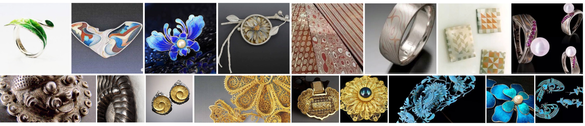

返 回
首饰是装饰符号、情感表达、文化现象。毕业设计结合工业设计背景，通过北京、上海、广州、深圳、昆明的实地首饰考察，对首饰珠宝市场品牌、生产制造工艺有所了解之后，和许多匠人一起在北京大曾珠宝工作室学习手作，包括金工、雕蜡、镶嵌。并进行个人首饰产品及品牌设计，产出系列首饰产品设计方案，在互联网上营销。我进行了全流程的参与，从调研到设计到生产到营销。下图为个人系列首饰及品牌设计展示：
In See首饰系列
柏拉图首饰系列
宠物狗首饰系列
北京实地考察：走访了中国地质大学珠宝学院、北京新街口、南锣鼓巷、王府井、三里屯等商业街区。 北京新街口有首饰一条街，许多零散无品牌或小品牌首饰在此售卖，以珠宝批发为名。另在新街口分布大大小小的铸造厂商，接受外来客户的私人珠宝设计订单，也帮助独立设计师将蜡模翻铸成金属产品，收取加工费用。与中国地质大学珠宝学院的同学进行沟通了解到，首饰设计专业在业内分为商业和艺术两个方向，商业首饰偏向于满足用户需求，寻找痛点便于日常出行佩戴；而艺术首饰是从设计者本身的情感出发，引起观者共鸣。此外，在南锣鼓巷、王府井、三里屯等商业街区，走访了其他首饰品牌实体店如“熙珠宝”、“我的小巴黎”、“潘多拉”、“施华洛世奇”等。在南锣鼓巷这样一条商业街区上，有不少于10家珠宝饰品售卖店，银饰品的售卖价大致是其成本价的10倍。
广东实地考察：广州上下九步行街附近的玉器一条街和首饰百货商城。广州是珠宝集散中心，许多的业内外人士都在广州拿货走货，以批发为主。走访深圳水贝田贝，了解到水贝国际珠宝交易中心，拥有3层共一万多平方米的营业面积，集中了来自中国、美国、意大利、泰国、香港及台湾等众多珠宝产业发达国家及地区的过百个知名珠宝企业及品牌，经营涉及金、银、钻石、翡翠玉石、珍珠等多个品类。深圳水贝、田贝区域算是全国最大珠宝饰品实体平台中心。
昆明实地考察：云南是少数民族最多的一个省，所以在昆明能看到与其他地域有所差异的民族文化类饰品，如传统花丝、布艺编织刺绣、传统錾刻。另云贵川一代生盛产玉石，品类高低端应接不暇。
上海实地考察：上海是时尚的代表，除了商圈首饰店如马良行。在巷子里也有许多文艺的小店，如“Hey Jewel”实体零售店，它是集结国内国外独立设计师首饰的零售平台，线下体验与线上效率结合良好。
(1) YIN设计金饰：“极简理念+18K 暖金+极致细且美的工艺”。创始者是两位公关营销女性，专注于独立设计和手工制作的18K以上纯度简约设计金饰，每个产品系列根据所表意义不同，面向具文艺情怀消费者，是较小众的新兴设计品牌。
(2) 東長：“深度的体验和理性的思考，于自我实践中挖掘物质在身体上恰如其分的表达”。创始人发现中国首饰发展的两极化现象，受众一方面佩戴以材料衡量价格的首饰，一方面追逐国际昂贵品牌，于是表达首饰、身体与心灵关系的品牌，主要通过互联网渠道进行营销售卖，2016开设第一家品牌概念体验店。
(3) 马良行：“独立3D打印定制首饰网络平台”。让每个消费者可参与设计，通过3D打印技术，呈现定制的独特个性首饰产品。轻定制由设计模板结合客户特点数据定制，如莫尔斯电码系列，客户提供想要诉说的文字，平台翻译为莫尔斯电码的图形，加到首饰；再如”声波”系列，客户只需将想要说的话录音成音频，系统对应生成声波图形首饰。
(4) REGINA：“手作、自由、定制”，95后独立首饰设计师，游走于时尚与艺术哲学之间，追求自由的形态，以私人故事定制为主，为顾客记录故事定制首饰，结合开办手作工作坊的形式。
(5) 尤目：“身体装饰实验室”，应用新奇的特殊材质和新技术进行首饰作品创作，拥有敏锐的感知力和独特的视角，是艺术商业首饰结合较好的设计主导品牌。
(6) 大树珠宝设计：“高端中国传统玉饰品创新”，走高端定制设计，将中国古典设计风格与当代审美结合。
(7) 潘多拉：“串珠、定制”。在于满足消费者的个人专属特点。每一颗串珠都讲一个故事，串成一串珠，作为一个纪念，这是潘多拉的首饰营销独到之处。
(8) Darry-Ring：“男士一生仅能定制一枚”的独特定制模式。以年轻、时尚、轻奢的品牌风格，独特性的口号营销。
(9) 周大福：“首饰工艺、东方魅力”，周大福首饰品牌历史超过80年，属较为传统的首饰设计行列。
首饰品牌调研
(1) 錾刻：利用金、银、铜等金属材料延展性的中国传统手工技艺。从出土商周青铜器、金银器上的一些錾刻文、镶嵌和金银错等文物标本可知，这种技术至今已有数千年的发展历史。錾刻工艺的操作，是在设计好器形和图案后，按照一定的工艺流程，以特制的工具和特定的技法，在金属板上加工出千变万化的浮雕状图案。
(2) 花丝：花丝镶嵌是将黄金纯银等贵重金属加工成丝再经盘曲、掐花、填丝、堆垒等手段加工成首饰的细金工艺。
(3) 点翠：制作时先将金、银片按花形制作成一个底托，用金丝沿着图案花形的边缘焊个槽，在中间部分涂上适量的胶水，将翠鸟的羽毛巧妙地粘贴在金银制成的金属底托上，形成吉祥精美的图案。这些图案上一般还会镶嵌珍珠、翡翠、红珊瑚、玛瑙等宝玉石。由于翠鸟已是国家保护动物，生产的点翠首饰，均采用代用品。会此工艺的人已经很少。
(4) 珐琅：主要分为画珐琅、内填珐琅、掐丝珐琅三种。珐琅首饰色彩绚丽，具宝石光泽和质感，耐腐蚀、耐磨损、耐高温，防水防潮，坚硬固实，历经千百年而不褪色。
(5) 木纹金：起源于日本传统金属加工工艺，把不同颜色的金属，如 “白金、黄金、玫瑰金、赤铜、白银” 等叠在一起，在高温高压状态下熔接，经过锻打、敲击、锤压、锯锉打磨等使固有色层层叠加，产生丰富的自然纹理效果。
首饰传统工艺
原始部落时的人们已开始佩戴如项饰、腰饰、腕饰等饰品，在中国历史中首饰也成为文化记载。首饰不仅是人体的装饰媒介，也演变成身份认同、情感表达的精神表现。首饰设计是一种造物行为，中国首饰从材质、图案造型、风格、佩戴方式等深受中国美学思想影响，同时在几千年的积累、融合、创新、发展中也形成了独具特色的首饰美学。如今，首饰珠宝行业也成为设计界单独的一支，手作首饰的匠人工作室也随着时代的潮流开始大量涌现。首饰设计包含如材料、工艺、造型、人机、参数化等设计学科相关内容，而中国古代金银首饰的工艺、材料以及文化内涵也值得探究。商业界的首饰占据奢侈品、时尚品的市场，在艺术界首饰能起人情感的共鸣。
首饰日记
从而我进行个人首饰品牌设计，产出系列首饰产品设计方案，并通过微信公众号营销，并计划参与众筹，成果如前文图所示。这是一个漫长、复杂、辛苦的过程。初次尝试的自己很多地方显得不足，也学到了不少经验教训。过去有段时间我用首饰记日记，每天一个概念记录一个情绪，创造一个回忆，进行一个设计。